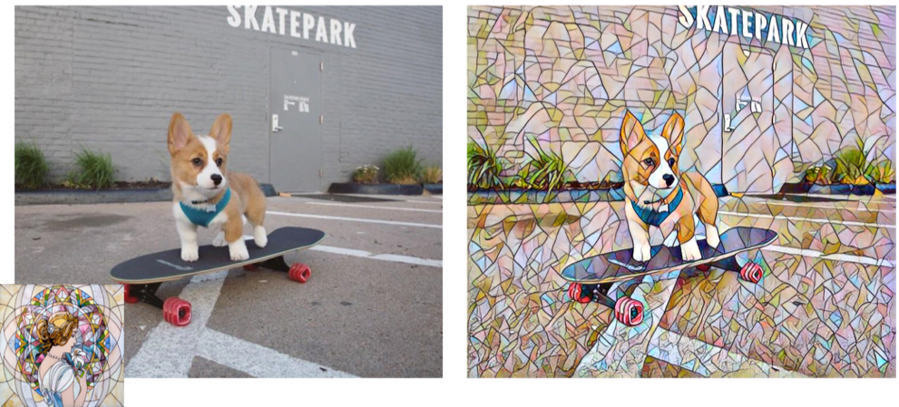

Edit -> Notebook settings and change your hardware accelerator
to GPU and press SAVE.


Runtime -> Run all.
 Under
Under Select file(s) select Choose Files to upload your media content. You can select multiple images and videos
at once.
 The code will start running. You can see the progress under the
The code will start running. You can see the progress under the Main section. This may take a couple minutes
depending on the length and resolution of the selected media.finished_products folder to the left. You can download the media file
by pressing to the right of name.
PEOPLESKATEBOARDOTHER_CLASSESSTYLEINVERSECLASS_SPECIFICFPS_30PEOPLE, SKATEBOARD, and OTHER_CLASSES correspond to the classes the user want styilized. For example,
if I check both PEOPLE and SKATEBOARD options, only detected persons and skateboards will be stylized as shown below.
OTHER_CLASSES is a write in option. The user can write in other classes available in this section, separated by commas.
Here's a list of classes available to choose from: person, bicycle, car, motorcycle, airplane, bus, train, truck, boat, traffic light, fire hydrant, stop sign, parking meter, bench, bird, cat, dog, horse, sheep, cow, elephant, bear, zebra, giraffe, backpack, umbrella, handbag, tie, suitcase, frisbee, skis, snowboard, sports ball, kite, baseball bat, baseball glove, skateboard, surfboard, tennis racket, bottle, wine glass, cup, fork, knife, spoon, bowl, banana, apple, sandwich, orange, broccoli, carrot, hot dog, pizza, donut, cake, chair, couch, potted plant, bed, dining table, toilet, tv, laptop, mouse, remote, keyboard, cell phone, microwave, oven, toaster, sink, refrigerator, book, clock, vase, scissors, teddy bear, hair drier, toothbrush
.
SKATEBOARD option and type dog in the OTHER_CLASSES section, the stylization
would be done on the classes as shown below.
STYLE option allows you to choose from 4 of our pretrained styles, or you can upload your own pretrained weights by selecting
pretrained (the weights would have
to come from PyTorch's fast-neural-style model).
candy
mosaic

rain_princess
undie
INVERSE option stylizes everything but the selected class. If I were to keep my settings from the last image
and select the INVERSE option, then the stylization will look like below.
CLASS_SPECIFIC option indicates whether the stylization should apply to the classes only or the entire image.
If I were to uncheck the CLASS_SPECIFIC option, then the entire image would be stylizied as shown below.
FPS_30 option changes the final video to be 30 frames per second. Some pros to consider for this option.
If the video uploaded is 60 frames per second, it would take half the time for the video to be processed if FPS_30 is selected. Also
Instagram videos upload at 30 frames per second, so if you are generating videos for the gram, FPS_30 is worth doing as it won't affect
the uploaded video and would be much faster to generate.

Comments
Leave a comment for this post on this ticket!